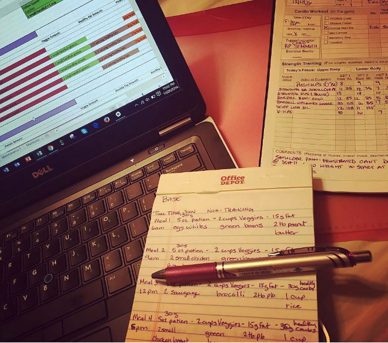

Hi! Thank you for visiting my webpage, I really do appreciate you taking your time and reading my bio. I am the author, the creator, and the developer of the entirety of this webpage. I structured all the functionality and designs that you see with your very own eyes on this page. And so if you have any constructive feedback on how I can improve my site or if you just want to give me a compliment on how great of a job I did on this site (hopefully that is what you are thinking), then I will greatly appreciate it. To reach me out, just go to the contact me page and there you can get a hold of me. Thanks!
So just to give you a background of who I am, I will start off with a brief summary of my credentials. I attended Lehman College where I earned a bachelors degree in Exercise Science. I am certified through American College of Sports Medicine (ACSM) as a Certified Personal Trainer (CPT) and National Strength & Conditioning Association (NSCA) as a Certified Strength and Conditioning Specialist (CSCS). I've been a personal trainer since 2017 and I've helped many of my clienteles reach their fitness goals, which is a great feeling. I take in a lot of pride in my work because I always continuously educate myself to stay on top of the scientific literature to make sure that my clients (and myself as well) stay in the best shape we possible can in the most healthiest and optimal way.
I have a huge passion for fitness as well as helping everyone reach their fitness goals because
I know how it feel to achieve that. I always strive to better myself and I do plan on competing in the future
(within the next few years). I plan on competing in both bodybuilding and powerlifting (not at the same time
though). I will keep you updated on it by posting up my progress. I will continuously update this website to
not only make it more user friendly through feedbacks on how it runs, but also uploading articles backed
by the scientific literature that I will be going over to get a better understanding on a topic so I can apply
it on myself and my clients to further optimize goals.
Mission Statement: I currently work as a personal trainer and have been since 2017 and I've been helping many of my clients achieve the physique of their dreams. With this website I want to expand on reaching the number of people I can help because I personally saw how great my clients felt and I want to see that around the world. Integrating technology into my passion in fitness will help me achieve that by developing applications that can increase fitness levels through motivation and education.